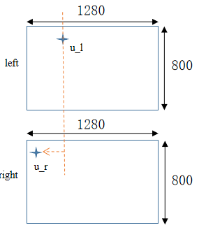

视差搜索偏移
本节介绍如何在 Gemini330 系列相机中使用 disparity_search_offset 功能（相机固件最低版本 1.4.60）。Disparity_search_offset 仅对深度流的 1280×720、1280×800 和 640×400 分辨率有效。
功能介绍
视差搜索范围的定义：对于左图像中的任何像素 (u_l, v)，默认情况下，右图像中对应的视差搜索范围为 [ (u_l - 255, v), (u_l, v) ]，其中视差搜索长度为 256，最大整数视差为 255。如果将搜索的起点调整为 [ (u_l - 255 - offset, v), (u_l - offset, v) ]，则偏移量定义为视差偏移。因此，我们的视差搜索范围配置包括视差搜索长度和搜索位置偏移（也可称为视差偏移）。

参数介绍
disparity_search_offset 相关参数在 gemini_330_series.launch.py 中设置
disparity_range_mode：视差搜索长度，只能设置为 64、128 和 256。disparity_search_offset：视差搜索偏移值，可以设置为 0 到 127。disparity_offset_config：视差搜索偏移交错帧。offset_index0：帧 0 视差搜索偏移值。offset_index1：帧 1 视差搜索偏移值。
| 视差范围模式 | 视差搜索偏移 | 倾斜墙最小深度 (mm) |
|---|---|---|
| 64 | 85 | Gemini 335L 388-406 |
| 64 | 127 | Gemini 335L 302-317 |
| 视差范围模式 | 视差搜索偏移 | 倾斜墙最小深度 (mm) |
|---|---|---|
| 128 | 0 | Gemini 335 233-249 Gemini 335L 453-475 |
| 128 | 45 | Gemini 335 172-184 Gemini 335L 334-349 |
| 128 | 127 | Gemini 335 117-125 Gemini 335L 226-236 |
| 视差范围模式 | 视差搜索偏移 | 倾斜墙最小深度 (mm) |
|---|---|---|
| 256 | 85 | Gemini 335L 169-178 |
| 256 | 127 | Gemini 335L 151-158 |
运行启动文件
设置 disparity_search_offset 参数，重新 colcon build 并运行启动文件
ros2 launch orbbec_camera gemini_330_series.launch.py